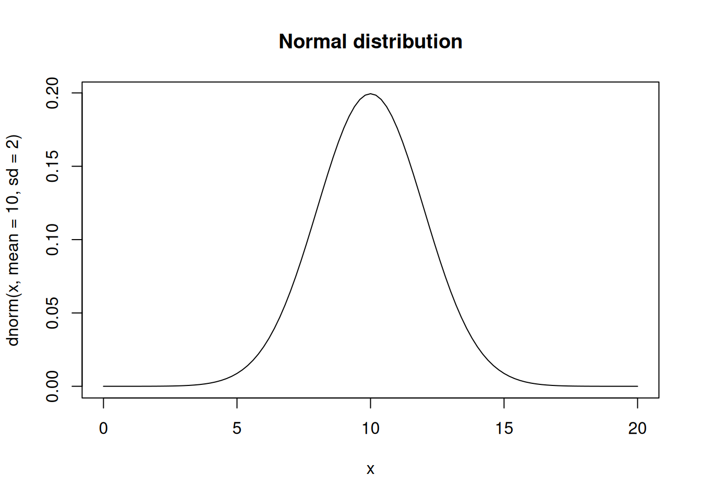

curve(
dnorm(
x,
mean = 10,
sd = 2
),
from = 0,
to = 20,
main = "Normal distribution"
)
Estimating parameters by optimizing probability
Maximum likelihood estimates the parameter values that make the observed data most probable under a statistical model. The implementation pattern in this chapter is deliberately explicit: construct the likelihood, collect the parameters in one vector, and pass that vector to optim().
For independent observations \(y_1,\dots,y_n\) with density \(p(y_i \mid \theta)\), the likelihood is
\[ L(\theta; \mathbf{y}) = \prod_{i=1}^{n} p(y_i \mid \theta). \]
The maximum likelihood estimate is
\[ \widehat{\theta} = \operatorname*{arg\,max}_{\theta \in \Theta} L(\theta; \mathbf{y}). \]
The product can become extremely small. Therefore we usually optimize the log-likelihood:
\[ \log L(\theta; \mathbf{y}) = \sum_{i=1}^{n} \log p(y_i \mid \theta). \]
Because optim() minimizes, the function we pass to R is usually the negative log-likelihood:
\[ \widehat{\theta} = \operatorname*{arg\,min}_{\theta \in \Theta} \left[-\sum_{i=1}^{n}\log p(y_i \mid \theta)\right]. \]
The normal density is
\[ f(y) = \frac{1}{\sigma \sqrt{2\pi}} \exp\left[-\frac{1}{2}\left(\frac{y - \mu}{\sigma}\right)^2\right]. \]
The normal distribution has two parameters: the mean \(\mu\) and the standard deviation \(\sigma\).
Here \(\sigma\) is fixed at 1 and only \(\mu\) is estimated.
set.seed(2026)
# generate random normal variable
mean = 4.5
sd = 1
n = 1000
y = rnorm(n, mean, sd)
# the likelihood function = L(y;.) = y ~ N(mu, sigma)
lik <- function(par, y, sd = 1) {
# the parameter we want to estimate
mean = par[1]
# the likelihood of y
L <- dnorm(x = y, mean = mean, sd = sd, log = TRUE)
# the joint likelihood
return(-sum(L))
}
# the parameters we wish to estimate
p <- c(0)
names(p) <- c("mu")
# Get the Maximum Likelihood estimates for our unknowns
ML <- optim(p, lik, y = y)
# compare ML results to empirical mean
print("Maximum Likelihood:")[1] "Maximum Likelihood:" mu
4.514063 [1] "Empirical:"[1] 4.513767Now estimate \(\mu\) and \(\sigma\) together. The only extra point is that \(\sigma\) must be positive, so the likelihood returns Inf for invalid values.
# likelihood for a positive standard deviation
sdlik <- function(x) {
res <- 0
if (x > 0) res = 1
return(log(res))
}
# the likelihood function = L(y;.) = y ~ N(mu, sigma) * sigma ~ U(0, Inf)
lik <- function(par, y) {
# the parameters we want to estimate
mean = par[1]
sd = par[2]
# the likelihood of the standard deviation
L2 <- sdlik(sd)
# if sd is not allowed, stop here
if (!is.finite(L2)) return(Inf)
# the likelihood of y
L1 <- dnorm(x = y, mean = mean, sd = sd, log = TRUE)
# the joint likelihood
return(-sum(L1 + L2))
}
# the parameters we wish to estimate
p <- c(0, 1)
names(p) <- c("mu", "sigma")
# Get the Maximum Likelihood estimates for our unknowns
ML <- optim(p, lik, y = y, method = "Nelder-Mead")
# compare ML results to empiricals
out <- rbind(
ML = ML$par,
empirical = c(mean(y), sd(y))
)
out mu sigma
ML 4.513704 0.9893471
empirical 4.513767 0.9901296Now the likelihood is multivariate normal. The parameters are two means, two variances, and the correlation.
library(mvtnorm)
# likelihood on correlation coefficient.
# this is essentially a uniform prior on
# the range -1 to 1 and 0 density outside
# that range
corlik <- function(x) {
res <- 0
if (x >= -1 & x <= 1) res = 1
return(log(res))
}
# the likelihood for the variance components.
# uniform above 0 and zero if negative
varlik <- function(x) {
res <- 0
if (x > 0) res = 1
return(log(res))
}
# the likelihood function = L(y;.) = y ~ MVN(mu, sigma) * rho ~ U(-1,1)
lik <- function(par, y) {
# the prior = likelihood of rho (correlation coefficient)
L2 <- corlik(par[5])
# and the priors on the variance components
L3 <- varlik(par[3])
L4 <- varlik(par[4])
# if any parameter is outside the allowed range, stop here
if (!all(is.finite(c(L2, L3, L4)))) return(Inf)
# we construct the covariance matrix out of the correlation coefficient
# and the variance components
covAB <- par[5] * (sqrt(par[3]) * sqrt(par[4]))
sigma <- array(c(par[3], covAB, covAB, par[4]), dim = c(2, 2))
# the likelihood of y
L1 <- tryCatch(
dmvnorm(x = y, mean = c(par[1], par[2]), sigma = sigma, log = TRUE),
error = function(e) -Inf
)
if (!all(is.finite(L1))) return(Inf)
# the joint likelihood
return(-sum(L1 + L2 + L3 + L4))
}
# those are the optimizers available
methods = c("Nelder-Mead", "BFGS", "CG", "L-BFGS-B", "SANN", "Brent")
# the parameters we wish to estimate
p <- c(0, 0, 1, 1, 0.2)
names(p) <- c("mu1", "mu2", "tauA", "tauB", "rho")
# create random data
set.seed(2026)
n = 10
tauA <- 3
tauB <- 10
rho = 0.7
covAB <- rho * (sqrt(tauA) * sqrt(tauB))
muA <- 5
muB <- 20
# the variance-covariance matrix
sigma <- array(c(tauA, covAB, covAB, tauB), dim = c(2, 2))
# the random data
Y <- rmvnorm(n, c(muA, muB), sigma)
# Get the Maximum Likelihood estimates for our unknowns
ML <- optim(p, lik, y = Y, method = methods[1])
res <- as.list(ML$par)
res$covAB <- res$rho * (sqrt(res$tauA) * sqrt(res$tauB))
# compare ML estimates with empiricals
out <- rbind(
unlist(res),
c(colMeans(Y), var(Y[, 1]), var(Y[, 2]), cor(Y)[1, 2], cov(Y)[1, 2])
)
colnames(out) <- names(res)
rownames(out) <- c("ML", "empirical")
# inspect results
out mu1 mu2 tauA tauB rho covAB
ML -22.484565 7.335499 70.379671 14.028532 0.8906419 27.985487
empirical 4.069481 18.482726 1.771725 9.252332 0.5003696 2.025885The animal model is
\[ \mathbf{y} = \mathbf{X}\mathbf{b} + \mathbf{a} + \mathbf{e}, \]
with the marginal distribution
\[ \mathbf{y} \sim MVN(\mathbf{X}\mathbf{b}, \mathbf{A}\sigma_a^2 + \mathbf{I}\sigma_e^2). \]
The implementation below keeps the construction explicit. We build \(\mathbf{V} = \mathbf{A}\sigma_a^2 + \mathbf{I}\sigma_e^2\), calculate the multivariate normal log-likelihood, and minimize the negative log-likelihood.
library(mvtnorm)
set.seed(2026)
# the likelihood for the variance components.
# uniform above 0 and zero if negative
varlik <- function(x) {
res <- 0
if (x > 0) res = 1
return(log(res))
}
# a small relationship matrix for a teaching example
n_animals <- 20
A <- diag(n_animals)
A[1, 2] <- A[2, 1] <- 0.5
A[3, 4] <- A[4, 3] <- 0.5
A[5, 6] <- A[6, 5] <- 0.25
# design matrix for the intercept
X <- matrix(1, n_animals, 1)
# true values used to simulate the data
b <- 30
var_a <- 4
var_e <- 9
# phenotype
a <- as.numeric(rmvnorm(1, mean = rep(0, n_animals), sigma = A * var_a))
y <- as.numeric(X %*% b + a + rnorm(n_animals, sd = sqrt(var_e)))
# likelihood function = L(y;.) = prod(PDF(y, E(y) = Xb, var(y) = A var_a + I var_e))
lik <- function(par, y, X, A) {
# likelihood for the variance components
L2 <- varlik(par[1])
L3 <- varlik(par[2])
# if any variance is outside the allowed range, stop here
if (!all(is.finite(c(L2, L3)))) return(Inf)
# it has to be this awkward because 'optim' only wants one vector of parameters
b <- matrix(c(par[3:(2 + ncol(X))]), ncol = 1)
# this is A var_a
G <- A * par[2]
# this is I var_e
R <- diag(length(y)) * par[1]
# this is var(y)
V <- G + R
# E(y)
mu <- X %*% b
# optim minimizes - therefore we need the negative likelihood
# Instead of taking the products over the likelihoods we take
# the sum over log(L) for numerical stability
L1 <- tryCatch(
dmvnorm(x = y, mean = as.numeric(mu), sigma = V, log = TRUE),
error = function(e) -Inf
)
if (!all(is.finite(L1))) return(Inf)
return(-sum(L1 + L2 + L3))
}
# This is only necessary because 'optim' wants one parameter vector
getp <- function(X, b = 0.1, var_e = 1, var_a = 1) {
p <- c(var_e, var_a, rep(b, ncol(X)))
names(p) <- c("var_e", "var_a", paste("b", 0:(ncol(X) - 1), sep = ""))
p
}
# Get the Maximum Likelihood estimates for our unknowns
methods = c("Nelder-Mead", "BFGS", "CG", "L-BFGS-B", "SANN", "Brent")
ML <- optim(getp(X, b = mean(y)), lik, X = X, A = A, y = y, method = methods[1])
# compare ML results to the true simulation values
out <- rbind(
ML = ML$par,
true = c(var_e, var_a, b)
)
out var_e var_a b0
ML 8.290905 7.775783e-06 30.09605
true 9.000000 4.000000e+00 30.00000p for the normal mean example. Does the optimum change?n = 20.rho in the correlation example and rerun the analysis.A. What happens to the variance component estimates?-sum(L) rather than sum(L).